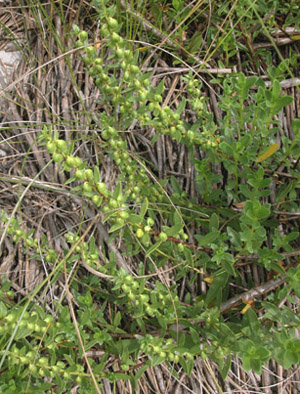

Previous || Next || Return to Mystery Plants || USC Herbarium
This Week's Mystery Plant | Dr. John B. Nelson Curator, USC Herbarium |
|
Time to hit the beach again! Be sure to take plenty of sun-screen along, and use it. Also wear a hat. While you are strolling around looking for shells and things, pay attention to some of the vegetation along the dunes. "Sea-oats" is probably the best-known and most conspicuous of our southern coastal plants, but there are plenty of others, if you take the time to look. Our Mystery Plant is a shrub, sometimes up to about 3 feet tall, and it is a member of the sunflower family. It is distributed all along the Atlantic beaches from Virginia south to the Florida Keys, and then along the Gulf over to Texas. The leaves are smooth and bright green, up to about 3 inches long, and occasionally with a few marginal teeth. The leaves are opposite on the lower part of the stem, and then they alternate on the upper portions. This species is a natural dune stabilizer, and is at home on the fore, or front, dunes, where the salt spray and wind-borne sand are at a maximum. One strategy that plants in such environments have evolved is that of succulence. This beach plant has very succulent, fleshy leaves, which are useful in reducing water loss. (If you take a leaf and bite into it, you'll find that it tastes pretty salty. Not a big surprise.) It is common on South Carolina beaches, often in big stands. It blooms in the fall, so you won't see any flowers on it now. When it does bloom, it produces several branched stalks, each bearing fleshy heads of tiny greenish-yellow flowers; the heads are more or less pendant, or hanging downward on the stalk. |
 Photo by Linda Lee |